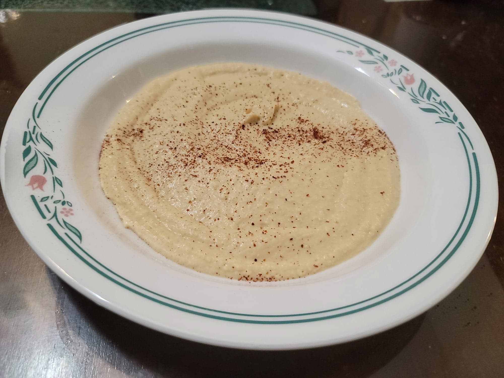

Hummus

Ingredients:
- 1 can Chickpeas or 1 1/2 cups Cooked chickpeas
- 1/4 cup Tahini
- 1/4 cup Lemon juice
- 1 clove Garlic
- 1/2 tsp Cumin
- 2 tbsp Olive oil
- Salt, to taste
- 2-3 tbsp Aquafaba (Chickpea water), or water
- Optional: Paprika or Sumac, for garnish
Instructions:
- Combine all ingredients into a food processor and process for a few minutes until smooth. Add in more salt as needed for taste and more aquafaba as needed for a smoother hummus. Serve with bread, crackers, falafel, or whatever you like.